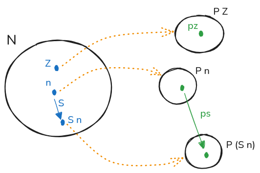
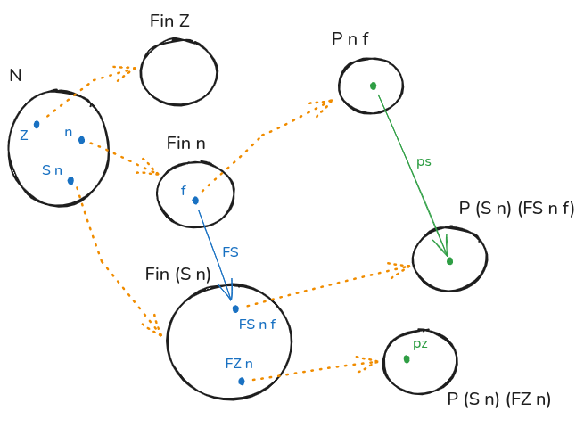

Form of Induction Type
2026-01-20
以 Agda (Coq 类似) 为例总结 Inductive Type 的一般形式 1
总览：四个规则
Inductive Type 由四个规则组成：
| 规则 | 含义 | Agda 体现 |
|---|---|---|
| Formation | 类型如何构成 | data T ... where 定义 |
| Introduction | 如何构造元素 | c : ... → T constructors |
| Elimination | 如何使用元素 | 由 constructors 决定的 induction principle |
| Computation | 如何归约 | pattern matching 的计算规则 |
核心关系：
- Introduction Rules（Constructors）→ 定义类型的内部结构
- Elimination Rules（Induction Principle）→ 映射到其他类型，保持同样结构
- Induction Principle 的形式完全由 Constructors 决定
General Form
data T (p₁ : P₁) ... (pₖ : Pₖ) : (i₁ : I₁) → ... → (iⱼ : Iⱼ) → Set l where
c : (a₁ : A₁) → ... → (aₘ : Aₘ) → T p₁ ... pₖ t₁ ... tⱼ
...
-- Aₓ can be either:
-- 1. Non inductive and does not mention `T` at all
-- 2. Or inductive in form
-- `(b₁ : B₁) → ... → (bₙ : Bₙ) → T q₁ ... qₖ s₁ ... sⱼ`
-- Where `T` must not occur in any `Bₙ`说明：
data ... where定义类型本身，相当于 Formation Rule(p₁ : P₁) ... (pₖ : Pₖ)是 parameters：整个类型共享的参数，所有 constructors 必须具有相同的 parameters(i₁ : I₁) → ... → (iⱼ : Iⱼ)是 indices：type family 的索引，不同 constructors 可以产生不同的 indices- Parameters 可视为特殊 indices，因为一致而被提取到前面，影响整体行为；不一致的 index 表达 type family 内 terms 的复杂关系
c是 constructors，相当于 Introduction Rules- 每个构造必须包含
T p₁ ... pₖ t₁ ... tⱼ作为返回类型 - 参数
Aₓ必须满足 Strict Positivity：类型T只能出现在箭头右边
- 每个构造必须包含
data Bad : Set where
bad : (Bad → Bad) → Bad
-- A B C
-- A is in a negative position, B and C are OKExplanation
为什么需要 Strict Positivity？
将 constructor
看作代数运算：c : (A -> T) -> T，其中 A
是 arity（参数数量）。
- 常量：
unit -> T - 一元：
T -> T=(unit -> T) -> T - 二元：
T -> T -> T=bool -> T -> T（两个元素） - 无穷：
(nat -> T) -> T
关键问题：arity A 必须在 T
定义之前确定。
如果允许 (T -> T) -> T，则： - “有多少个参数？” →
“T-个”（未定义） -
即使存在不动点解，也会破坏归纳原理 2
因此 Strict Positivity 保证：类型只能出现在箭头右边（positive position），作为”输出”而非”输入”。
Induction Principle
Elimination Rule 由 Introduction Rules（Constructors）决定，Computation Rule 定义归约行为。
核心思想：Constructors 定义类型的内部结构；Induction Principle 将其映射到其他类型，保持相同结构。
四个例子的对比
| 类型 | Parameter | Index | Constructors | Induction Principle 特点 |
|---|---|---|---|---|
| ℕ | 无 | 无 | Z, S | 简单递归 |
| Fin | 无 | ℕ | FZ, FS | 依赖索引，Fin Z 空 |
| Id | A | A | refl | 参数 + 索引，单构造 |
| T | 无 | 无 | T0, T1 | 无穷参数 |
模板：如何从 Constructor 推导 Induction Principle
对于每个 constructor c : ... → T：
- 确定结论类型：
(parameters) → (indices) → P（P的类型由构造结果决定） - 为每个构造提供证明方法：
- 若
c非递归：直接提供P (c ...) - 若
c递归：提供... → P (recursion_args) → P (c ...)
- 若
- Computation Rule：递归调用获取
P (recursion_args)
Natural Number
data ℕ : Set where
Z : ℕ
S : ℕ → ℕ
ℕ-ind : (P : ℕ → Set) →
P Z →
((n : ℕ) → P n → P (S n)) →
(n : ℕ) → P n
ℕ-ind p pz ps Z = pz
ℕ-ind p pz ps (S n) = ps n (ℕ-ind p pz ps n)
结论：(n : ℕ) → P n
构造对应：
| Constructor | 非递归 | 递归 | Induction 参数 |
|---|---|---|---|
Z |
✓ | ✗ | pz : P Z |
S n |
✗ | ✓ | ps : (n : ℕ) → P n → P (S n) |
Computation：ℕ-ind p pz ps (S n) = ps n (ℕ-ind p pz ps n)
Fin
data Fin : ℕ → Set where
FZ : (n : ℕ) → Fin (S n)
FS : (n : ℕ) → Fin n → Fin (S n)
Fin-ind : (P : (n : ℕ) → Fin n → Set) →
((n : ℕ) → P (S n) (FZ n)) →
((n : ℕ) → (f : Fin n) → P n f → P (S n) (FS n f)) →
(n : ℕ) → (f : Fin n) → P n f
Fin-ind p pz ps .(S n) (FZ n) = pz n
Fin-ind p pz ps .(S n) (FS n f) = ps n f (Fin-ind p pz ps n f)
结论：(n : ℕ) → (f : Fin n) → P n f
构造对应：
| Constructor | 非递归 | 递归 | Induction 参数 |
|---|---|---|---|
FZ n |
✓ | ✗ | pz : (n : ℕ) → P (S n) (FZ n) |
FS n f |
✗ | ✓ | ps : (n : ℕ) → (f : Fin n) → P n f → P (S n) (FS n f) |
注意：没有 Fin Z 的构造（空集）
Id
data Id {A : Set} (a : A) : A → Set where
refl : Id a a
Id-ind : {A : Set} (a : A) (P : (x : A) → Id a x → Set) →
P a refl →
(x : A) → (e : Id a x) → P x e
Id-ind a p r .a refl = r结论：(x : A) → (e : Id a x) → P x e
Parameter a 被提取到前面（一致），index x
变化。
构造对应：
| Constructor | 非递归 | 递归 | Induction 参数 |
|---|---|---|---|
refl |
✓ | ✗ | r : P a refl |
T（无穷参数）
data T : Set where
T0 : T
T1 : (ℕ → T) → T
T-ind : (P : T → Set) →
P T0 →
((f : ℕ → T) → ((n : ℕ) → P (f n)) → P (T1 f)) →
(t : T) → P t
T-ind p t0 t1 T0 = t0
T-ind p t0 t1 (T1 f) = t1 f (λ(n : ℕ) → T-ind p t0 t1 (f n))结论：(t : T) → P t
构造对应：
| Constructor | 非递归 | 递归 | Induction 参数 |
|---|---|---|---|
T0 |
✓ | ✗ | t0 : P T0 |
T1 f |
✗ | ✓ | t1 : (f : ℕ → T) → ((n : ℕ) → P (f n)) → P (T1 f) |
T1 f 由无穷多个 f 0, f 1, …
构造，因此需要 (n : ℕ) → P (f n) 作为参数。
Coq equivalent
Agda 不自动生成 induction principle，用 Coq 的
Check xxx_ind 验证 3
总结：Parameters vs Indices
需要所有 constructors 共享同一个类型参数？ → YES: 使用 Parameter → NO: 使用 Index
| 特性 | Parameter | Index |
|---|---|---|
| 一致性 | 所有 constructors 共享 | 不同 constructors 可不同 |
| 位置 | 提取到类型定义前面 | 作为 type family 索引 |
| 用途 | 控制整体行为 | 表达 terms 之间关系 |
| 视作 | 特殊的 index | 标准的 index |
示例：
Id {A : Set} (a : A) : A → Set：a是 parameter（固定），x是 index（变化）Fin : ℕ → Set：n是 index（不同构造产生不同n）
Term in Type
(updated @ 2024)
问题：类型中的元素是否仅由 constructor 构造？
答案：未必。上述规则是形式定义，满足规则的模型可能包含无法直接构造的元素。
例如：自由群只有一个生成器，但并非所有群元素都是生成器 4 5
just like in order to define a group homomorphism out of free group on one generator you only need to say what happens to generator. It doesn’t mean that every element of group is generator
https://agda.readthedocs.io/en/v2.6.0.1/language/data-types.html#id2↩︎
↩︎Inductive N : Type := | Z : N | S : N -> N . Check N_ind. (* N_ind : forall P : N -> Prop, P Z -> (forall n : N, P n -> P (S n)) -> forall n : N, P n *) Inductive Fin : N -> Type := | FZ : forall n : N, Fin (S n) | FS : forall n : N, Fin n -> Fin (S n) . Check Fin_ind. (* Fin_ind : forall P : forall n : N, Fin n -> Prop, (forall n : N, P (S n) (FZ n)) -> (forall (n : N) (f0 : Fin n), P n f0 -> P (S n) (FS n f0)) -> forall (n : N) (f1 : Fin n), P n f1 *) Inductive Id {A : Type} (a : A) : A -> Type := | refl : Id a a . Check Id_ind. (* Id_ind : forall (A : Type) (a : A) (P : forall a0 : A, Id a a0 -> Prop), P a (refl a) -> forall (y : A) (i : Id a y), P y i *) Inductive T : Type := | T0 : T | T1 : (N -> T) -> T . Check T_ind. (* T_ind : forall P : T -> Prop, P T0 -> (forall t : N -> T, (forall n : N, P (t n)) -> P (T1 t)) -> forall t : T, P t *)https://math.stackexchange.com/questions/4950274/how-to-interpret-the-induction-principle-of-identity-type-j-rule↩︎
https://github.com/HoTT/book/issues/460#issuecomment-23364295↩︎